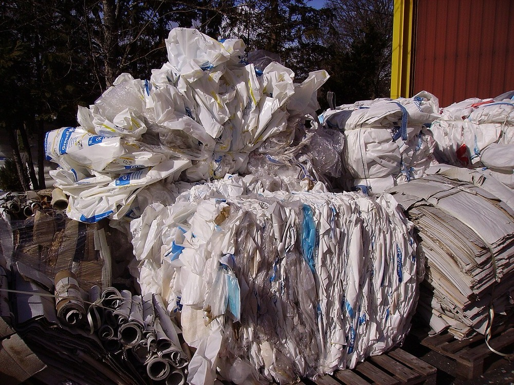
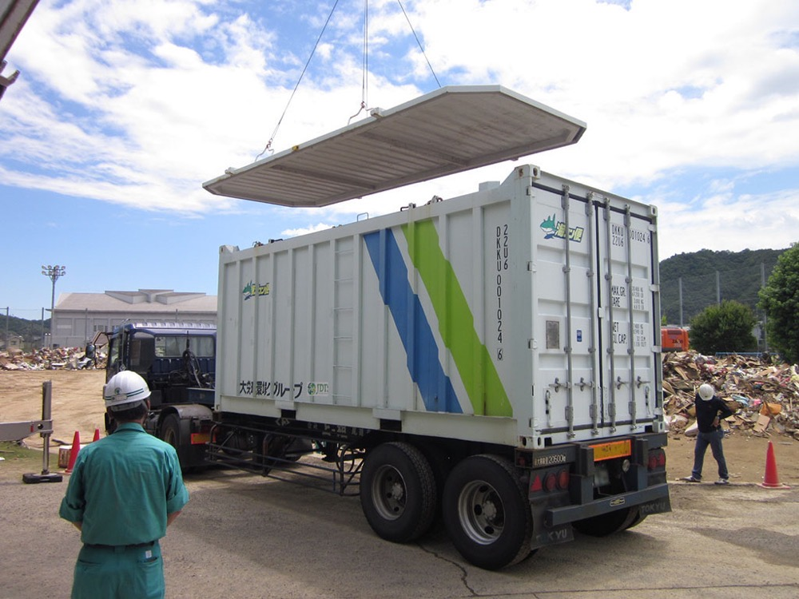

産業廃棄物の収集運搬業と処分業の許可をもつ中小企業を、株式取得で順に買収して束ねる事業である。顧客は工場・建設会社・病院などの排出事業者で、処理の委託契約を毎年更新する。許可と処理施設が新規参入を妨げるため、買収した会社の収益は長く続く。
| 区分 | 数値 | 時点 | 出典 |
|---|---|---|---|
| 産業廃棄物処理業の市場規模 | 約5兆円 | 2010年度対象の調査 | 1 |
| 産業廃棄物の総排出量 | 3億6,725万t | 2023年度 | 2 |
| うち再生利用量 | 2億79万t（54.7%） | 2023年度 | 2 |
| うち最終処分量 | 875万t（2.4%） | 2023年度 | 2 |
| 産業廃棄物処理業の許可件数 | 248,458件 | 2024年4月1日 | 3 |
| 中間処理施設数 | 19,565件 | 2024年4月1日 | 3 |
| 最終処分場数 | 1,551件 | 2024年4月1日 | 3 |
| 最終処分場の残存容量・残余年数 | 17,741万m³・20.3年 | 2024年4月1日 | 3 |
市場規模の約5兆円は環境省が2013年に公表した唯一の全国推計である。業者数による拡大推計で約5.3兆円、単価と処理量による推計で約4.5兆円であった。約4%の業者が売上の50%を占める1。許可件数は都道府県ごとに数えるため、1社が複数の許可をもつ。事業者の数はこれより少ない。
世界の廃棄物処理市場の総額は信頼できる一次情報で確認できなかった。米国の上場3社の売上は次のとおりである1314。
| 会社 | 売上 | 年 |
|---|---|---|
| WM | 252億ドル | 2025 |
| Republic Services | 170.5億〜171.5億ドル | 2026年の会社見通し |
| Waste Connections | 94.67億ドル | 2025 |
| 会社 | 決算期 | 売上高 | 営業利益 | 営業利益率 | 出典 |
|---|---|---|---|---|---|
| TREホールディングス | 2026年3月期 | 1,192億円 | 223億円 | 18.7% | 7 |
| 大栄環境 | 2026年3月期 | 879億円 | 222億円 | 25.3% | 8 |
| ダイセキ | 2026年2月期 | 718億円 | 146億円 | 20.3% | 10 |
営業利益率は営業利益 ÷ 売上高。TREホールディングスは2027年3月期の通期予想を売上1,074億円、営業利益87億円に下方修正した7。
首位のTREホールディングスでも、市場約5兆円に対するシェアは約2.4%である。計算式は 1,192億円 ÷ 5兆円 で、市場規模の推計が古いため参考値にとどまる。TREホールディングスは2021年10月にタケエイとリバーホールディングスの共同持株会社として発足した11。国内の大手も買収と統合で規模を拡大してきた。
| 買収の方法 | 業の許可 | 処理施設の設置許可 |
|---|---|---|
| 株式取得 | 法人が同一のため継続する。役員・株主の変更届を出す4 | 継続する |
| 合併・会社分割 | 承継されず、新規の許可が必要とされる4 | 都道府県知事の認可を受ければ承継する。廃棄物処理法第15条の45 |
| 事業譲渡 | 承継されず、新規の許可が必要4 | 施設の譲受けに知事の許可が必要5 |
施設の譲受けと合併の認可の標準処理期間は、三重県で40日である6。買収は株式取得で行い、子会社を合併しない構造にする。業の許可を失わないためである。株式取得でも、買い手側の役員が欠格要件に該当すれば許可は取り消される。
1社目は収集運搬業と小規模な中間処理施設をもつ会社とする。処分場をもつ会社は取得価額が大きく、4,000万円の自己資金では融資の条件が合わない。

| 用途 | 金額 | 内容 |
|---|---|---|
| サーチ期間の人件費・活動費 | 900万円 | 6か月。仲介会社・地銀・業界団体への訪問 |
| 財務・法務・環境の調査費 | 900万円 | 土壌汚染と施設の維持管理状況の調査を含む |
| 1社目の株式取得の自己資金 | 1,800万円 | 取得価額の約1割 |
| 統合費用・予備費 | 400万円 | 電子マニフェストと会計の統一 |
| 計 | 4,000万円 |
1社目の想定は、売上3億円、EBITDA 0.45億円の会社である。取得価額は EBITDA の4.5倍の約2億円とする。内訳は自己資金0.18億円、公庫と地銀の融資1.6億円、売主への分割払い0.2億円である。施設の土地と建物は融資の担保になる。
| 月 | 行うこと | 検証すること |
|---|---|---|
| 1〜3 | 候補30社の情報を集め、10社と面談する | 許可の種類、施設の状態、行政処分の履歴 |
| 4〜6 | 1社と基本合意し、財務・環境の調査を行う。融資を申し込む | 土壌汚染と施設の修繕費の額 |
| 7 | 株式を取得する。役員変更の届出を行う | 許可を管轄する自治体との関係の継続 |
| 8〜12 | 大手排出事業者への営業、2社目の候補選定 | 施設の稼働率をどこまで上げられるか |
| 段階 | 資金の種類 | 借入先 | 担保・条件 |
|---|---|---|---|
| 1社目 | 株式取得資金 | 日本政策金融公庫の事業承継向け融資、地銀 | 国民生活事業で上限7,200万円16。施設の土地・建物 |
| 2〜5社目 | 株式取得資金 | 地銀 | 子会社の現金収入と施設 |
| 施設の更新 | 設備資金・リース | 地銀、リース会社 | 認定事業の設備は法人税の特例の対象になる12 |
| 処分場の取得 | 大型の株式取得資金 | メガバンクと地銀の協調融資 | 処分場の残存容量と埋立計画を返済原資とする |
借入で買収するため、資金源の型はCである。処理施設の土地・建物を担保にできるため、Bを併用する。
| 年目 | 売上 | 営業利益 | 累計投資 | 借入残高 | 主な状態 |
|---|---|---|---|---|---|
| 1 | 1.5億円 | 0.0億円 | 2.2億円 | 1.8億円 | 1社。収集運搬と中間処理 |
| 2 | 8億円 | 0.6億円 | 9億円 | 7.5億円 | 3社 |
| 3 | 25億円 | 2.5億円 | 30億円 | 24億円 | 6社 |
| 5 | 90億円 | 11.7億円 | 105億円 | 80億円 | 12社。処分場1か所 |
| 7 | 220億円 | 33億円 | 260億円 | 190億円 | 20社 |
| 10 | 550億円 | 99億円 | 640億円 | 420億円 | 32社。処分場3か所 |
| 年目 | 売上 | 営業利益 | 累計投資 | 借入残高 | 主な状態 |
|---|---|---|---|---|---|
| 1 | 1.5億円 | -0.1億円 | 2.2億円 | 1.8億円 | 1社 |
| 2 | 4億円 | 0.2億円 | 4.5億円 | 3.8億円 | 2社 |
| 3 | 9億円 | 0.7億円 | 10億円 | 8億円 | 3社 |
| 5 | 25億円 | 2.5億円 | 28億円 | 20億円 | 6社 |
| 7 | 55億円 | 6.6億円 | 60億円 | 40億円 | 10社 |
| 10 | 130億円 | 16.9億円 | 140億円 | 85億円 | 16社。処分場なし |
10年で国内首位には届かない見込みである。楽観でも10年目の売上は550億円で、TREホールディングスの1,192億円7、大栄環境の879億円8 を下回る。大手2社は現在も買収を続けており、10年後の規模はさらに大きくなる。
首位に届かない理由は資金の差である。大栄環境は1年間で約651億円を投資に使った8。この額は楽観の10年間の累計投資640億円を1年で上回る。処分場をもつ優良な会社の買収では、大手と同じ案件で競う。

届く可能性があるのは地域と品目を限った市場である。例えば1つの県で建設系廃棄物の中間処理の首位になることは、5年から7年で可能と見込む。ただし、その市場は1,000億円に届かない。保守の場合は10年目に売上130億円、処分場をもたない地域の中堅で止まる。
廃棄物処理の許可は国と自治体ごとに定められ、処理施設は現地の住民の同意を要する。日本の許可と施設は海外では使えない。
グローバルなインフラになる可能性は低い。海外での事業は日系顧客への追随と、処理技術の提供に限られる。
| # | 基準 | 判定 | 根拠 |
|---|---|---|---|
| 1 | 50年、魂を燃やし続けられるか | 創業者が判定 | |
| 2 | 10年以内に国内市場規模1,000億円以上の市場でシェア1位になれるか | × | 楽観でも10年目の売上550億円で、首位TREホールディングスの1,192億円に届かない。 |
| 3 | 4,000万円で始められ、融資で伸ばせるか | ○ | 収集運搬と小規模な中間処理の会社なら融資で取得でき、施設は担保になる。 |
| 4 | グローバルなインフラになり得るか | × | 許可と施設は国ごとに必要で、日本の資産は海外で使えない。 |
| 5 | 営業力が最初の売上に直接結びつくか | △ | 最初の売上は買収で得る。大手排出事業者への営業は施設の稼働率を上げる段階で効果を示す。 |
| 6 | 同じビジョンを共有する仲間を誘える事業か | 創業者が判定 | |
| 7 | 本業が早く現金を生み、返済と出資の原資になるか | ◎ | 上場3社の営業利益率は18.7〜25.3%で、委託契約は毎年更新される。 |
| 8 | 投資先を束ねる群の中核になれるか | ○ | 処理量を集める立場として、解体・再生材・ソフトウェアの各社に取引を提供できる。 |
| 9 | 成長の資金源がA・B・Cのどれに当たるか | C | 借入で買収し、処理施設の土地・建物を担保にするBを併用する。 |

---No,2_%E3%80%90_Pictures_taken_in_Japan_%E3%80%91.jpg){kind=link}